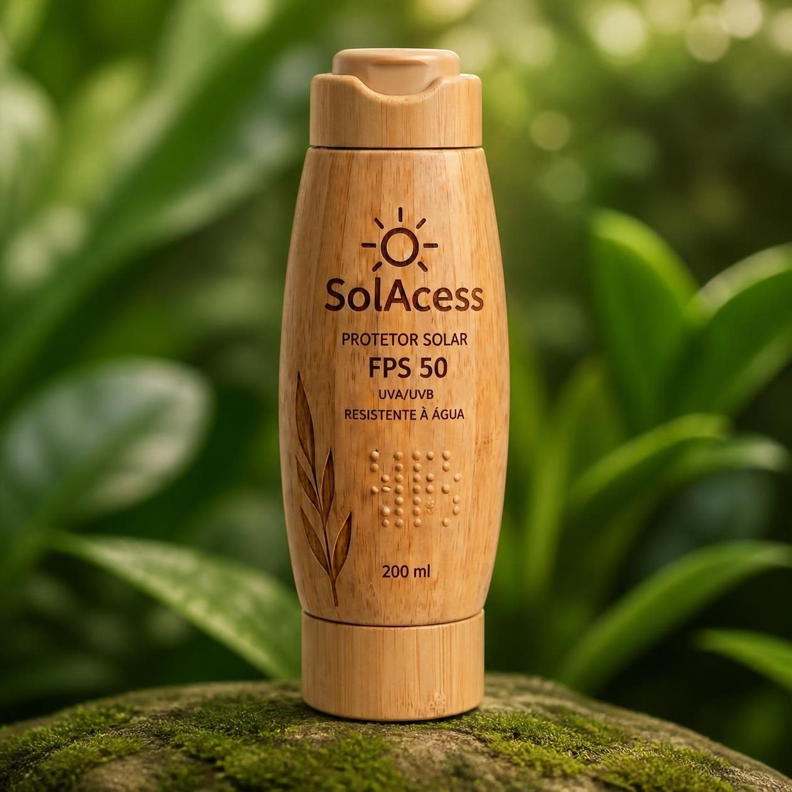
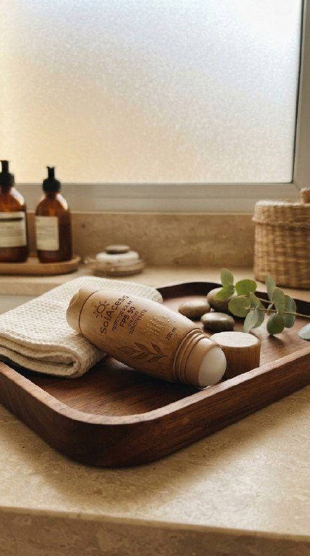
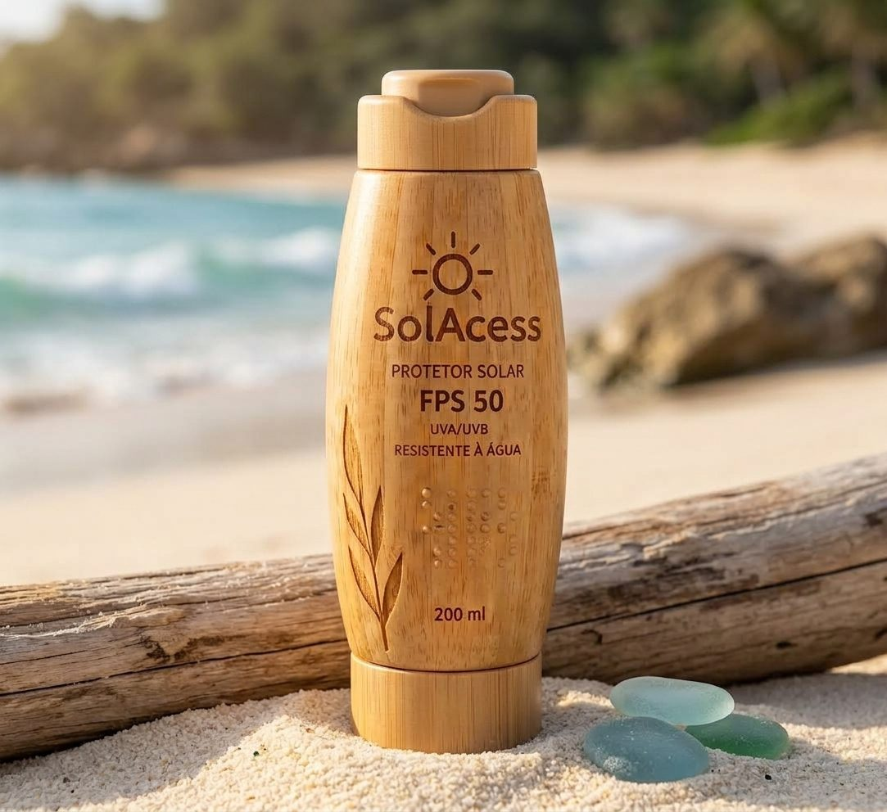
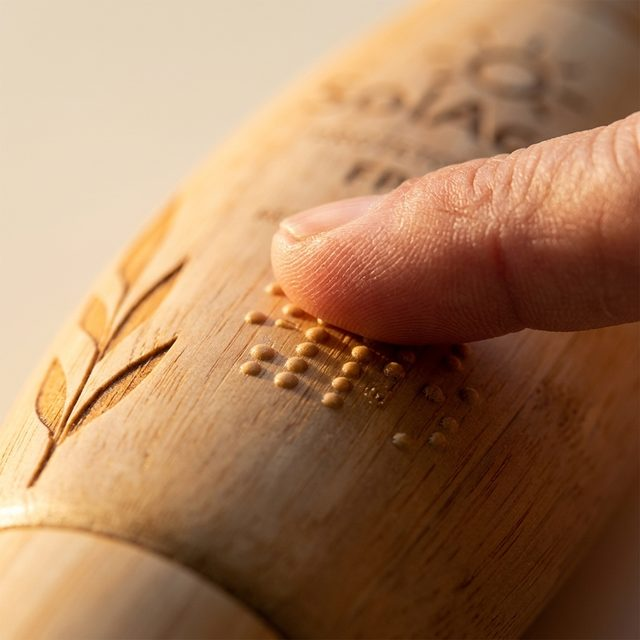
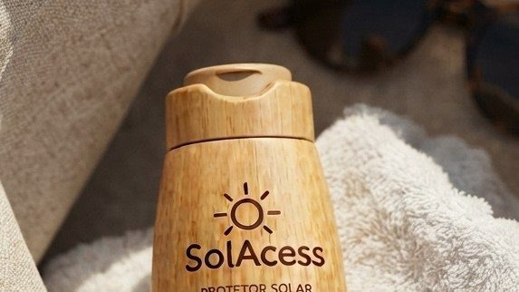
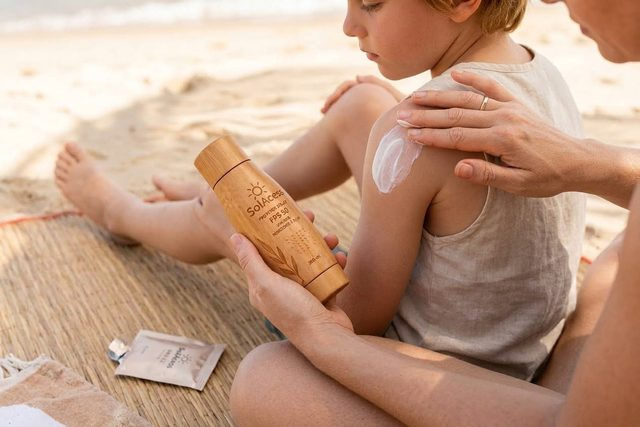
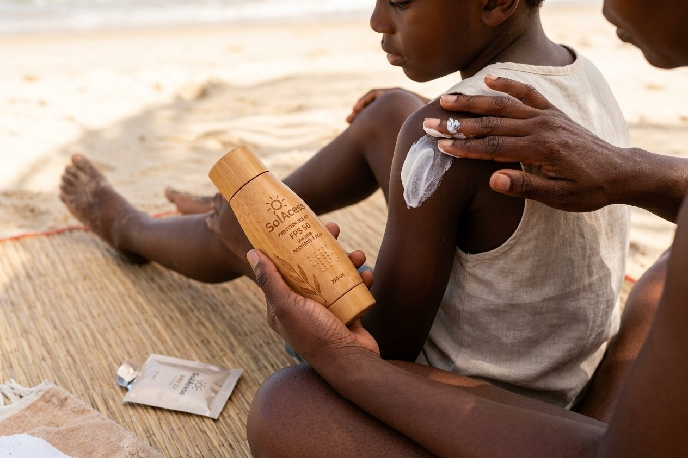
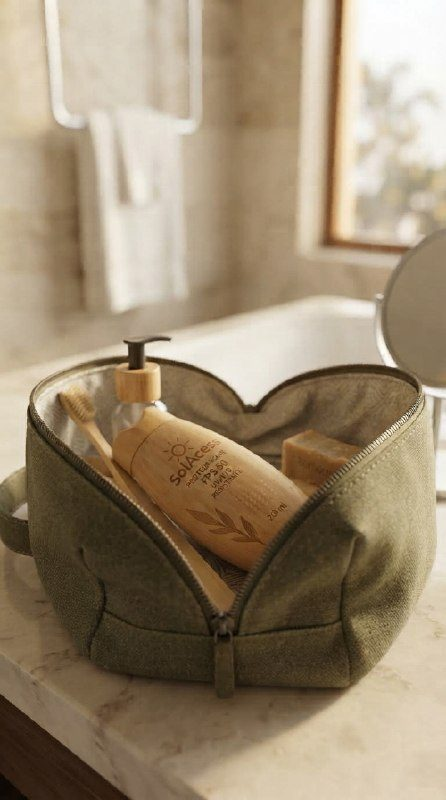

Bambu
A estrutura externa da embalagem será feita principalmente de bambu, escolhido pela proposta visual e ambiental do projeto.
Acessibilidade

Protetor solar acessível
Proteção solar pensada para ser fácil de segurar e de aplicar.
Projeto em desenvolvimento
Abrir, segurar e aplicar protetor solar pode ser difícil para quem tem artrite, Parkinson, mobilidade reduzida ou pouca força nas mãos. O SolAcess nasceu de uma pergunta simples:
Por que a embalagem de um produto tão importante para a pele não poderia ser pensada para a acessibilidade?
A resposta é uma proposta que une acessibilidade, praticidade e sustentabilidade: embalagem de bambu, bomba, rolo aplicador e sistema de refil.


Sobre o produto
O SolAcess é um protetor solar com embalagem de 200 ml, planejada para facilitar o contato com o produto desde o momento em que você segura o frasco até a aplicação na pele.
Formato ergonômico e superfície com elementos que favorecem a aderência, para o frasco não escorregar.
Retire a quantidade necessária sem precisar abrir completamente a embalagem.
O rolo aplicador espalha o protetor direto na pele, reduzindo a necessidade de usar os dedos.
Quando o conteúdo acabar, troque pelo refil e continue com a mesma embalagem de bambu.
Pensado principalmente para pessoas com dificuldade de movimento ou de força nas mãos. Mas não é exclusivo: a acessibilidade pode beneficiar qualquer pessoa que queira aplicar protetor solar de forma mais prática.

Conheça o frasco
Dispensa o protetor sem precisar abrir a embalagem por completo nem fazer movimentos de torção.
As curvas do corpo acompanham a palma da mão e facilitam a pegada, mesmo com os dedos rígidos.
Pontos em relevo dão aderência para o frasco não escorregar e ajudam a encontrar a posição certa pelo toque.
Mantém o frasco em pé com segurança e protege a estrutura de bambu.
Diferenciais

Uma embalagem pensada para reduzir a força e os movimentos complexos necessários para usar o produto.
Formato ergonômico, superfície aderente e base que dá estabilidade e protege a estrutura.
Dispensa o produto sem precisar abrir a embalagem por completo.
Espalha o protetor direto na pele, com menos uso dos dedos.
Reaproveita a embalagem principal e diminui o descarte.
Estrutura externa de bambu e PLA planejado para componentes da bomba.
Desenvolvido pensando em pessoas com necessidades diferentes, sem limitar o público.
Galeria
Da bolsa de praia à pia do banheiro: um frasco feito para acompanhar a rotina de quem precisa de mais praticidade.





Bambu e sustentabilidade
A sustentabilidade é um dos pilares do SolAcess. Cada material foi escolhido pensando nisso — e contamos com clareza o que já está definido e o que ainda depende de testes.
A estrutura externa da embalagem será feita principalmente de bambu, escolhido pela proposta visual e ambiental do projeto.
O PLA (ácido polilático), produzido a partir de matérias-primas renováveis, foi escolhido para partes do mecanismo, especialmente da bomba.
O frasco de bambu pode ser reutilizado: troca-se só o conteúdo. A ideia é diminuir a necessidade de descartar toda a embalagem.
Prevista como barreira interna, entre o material da embalagem e o conteúdo. Essa aplicação ainda vai passar por testes.

Clean Beauty
Usamos o conceito de Clean Beauty para orientar a escolha dos componentes: buscar uma composição mais consciente, materiais selecionados e menos desperdício.
Como o conceito não tem uma definição única, e o projeto ainda está em planejamento, não dizemos que o produto atende a todos os seus critérios.
Formulação proposta
A base da proposta conceitual, com óxido de zinco não nano como filtro solar mineral.
… e outros componentes cosméticos ainda em definição.
A formulação é uma proposta inicial de estudo. Ela será desenvolvida, testada e validada por uma empresa especializada.

Inclusão
Essa é a ideia que guia o SolAcess. Muitas embalagens exigem força, precisão ou firmeza — e isso pode afastar justamente quem mais precisa de praticidade.


Este site segue a mesma ideia: botões grandes, uma única rolagem para entrar e, no botão de acessibilidade no topo da página, opções para aumentar o texto e desligar as animações.
Comprar
O SolAcess está em desenvolvimento e as vendas ainda não foram abertas. Escolha sua opção para saber como acompanhar o lançamento.

O frasco completo, com estrutura externa de bambu, bomba e rolo aplicador.
Protetor + refil

O frasco de bambu e um refil para continuar usando a mesma embalagem quando o conteúdo acabar.

Só o conteúdo, para repor o protetor e reutilizar a embalagem principal de bambu.
Imagens ilustrativas do conceito, algumas criadas com inteligência artificial. Informações impressas nos rótulos das imagens não são definitivas: o FPS 50 é a meta do projeto e, assim como a proteção UVA/UVB e a resistência à água, ainda será comprovado em testes.
Ficha técnica
Antes de chegar ao mercado, o SolAcess vai passar por testes de estabilidade, segurança, eficácia e compatibilidade com a embalagem, além das avaliações exigidas pelos órgãos reguladores.
![Desenho técnico explodido do conceito SolAcess. Mostra a tampa de bambu; o sistema de pressão (press-top), com acionamento sem torção e dosagem por pressurização; o corte da bomba e o tubo da bomba; o frasco de bambu, com indicação de altura total, diâmetro e espessura da parede; o refil de 200 ml, sistema ecológico de refil com economia circular; o rolo aplicador; a barreira de cera de abelha; a base; o detalhe da textura tátil antiderrapante; e a fórmula proposta, com óxido de zinco não nano, karité, coco, vitamina E e meta de FPS 50, a comprovar.](assets/img/visao-tecnica-1083.jpg)
Perguntas frequentes
Não encontrou o que procurava? Fale com a equipe pelos canais de contato logo abaixo.
Ainda não. O projeto está na etapa de planejamento e desenvolvimento conceitual. O próximo passo é produzir um protótipo físico para testar a bomba, o rolo aplicador e o sistema de refil.
A meta do projeto é FPS 50. Esse valor ainda precisa ser comprovado pelos testes de eficácia antes do lançamento — o mesmo vale para a proteção UVA e UVB.
Essa característica ainda não foi definida. Se for pretendida, precisará ser comprovada por testes antes de ser anunciada.
Uma bomba libera a quantidade necessária sem que seja preciso abrir completamente a embalagem, e um rolo espalha o protetor direto na pele. O funcionamento exato do mecanismo será definido no protótipo físico.
Principalmente para pessoas com artrite, Parkinson, mobilidade reduzida, pouca força nas mãos ou dificuldade com embalagens convencionais. Mas ele não é exclusivo: qualquer pessoa que queira mais praticidade pode usar.
A ideia é reutilizar a embalagem principal de bambu e trocar apenas o conteúdo. O modelo definitivo do refil ainda será desenvolvido e testado.
Não afirmamos isso. A embalagem usa bambu e PLA em alguns componentes, mas há materiais diferentes envolvidos, e a degradação depende de condições específicas. Qualquer afirmação desse tipo só virá com testes e informações técnicas dos materiais.
O SolAcess é um projeto da Equipe 6 do SESI da Indústria. A fabricação e a validação da formulação estão planejadas para ser feitas com apoio de uma empresa especializada, que ainda não foi definida.
O Protetor SolAcess custa R$ 49,90, o Refil de 200 ml custa R$ 24,90 e o Kit Protetor + Refil sai por R$ 64,90.
Contato
Fale com a equipe pelos canais abaixo.